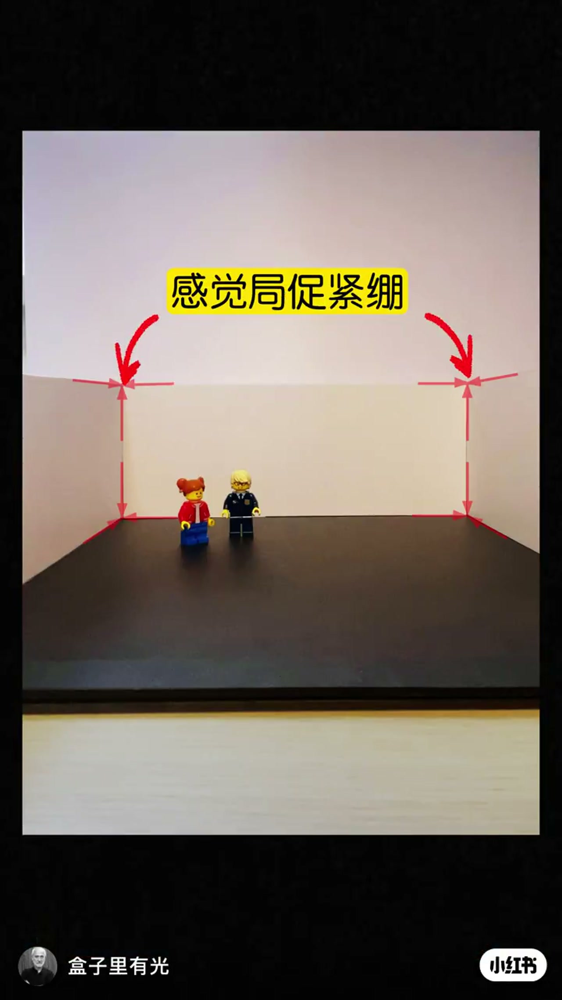
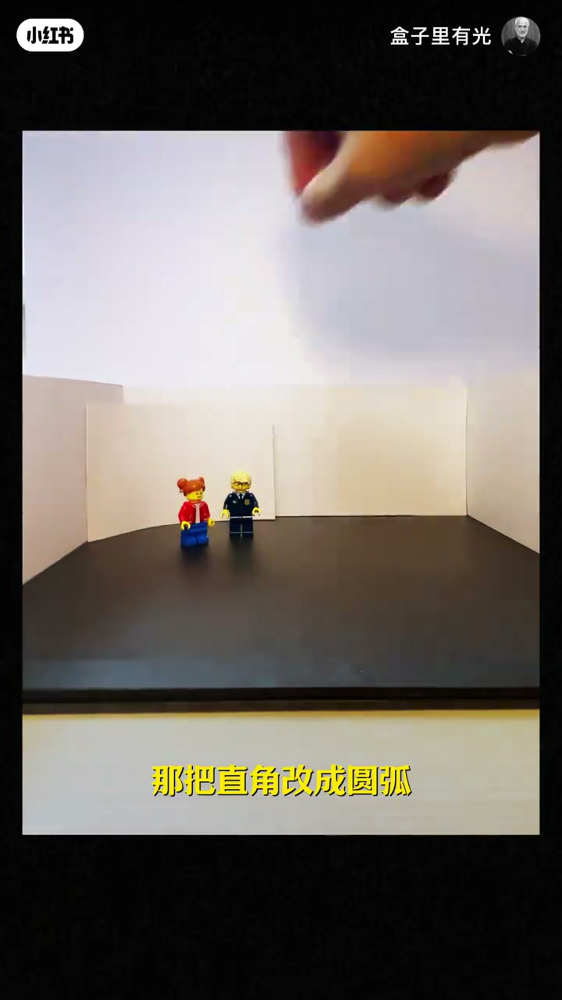
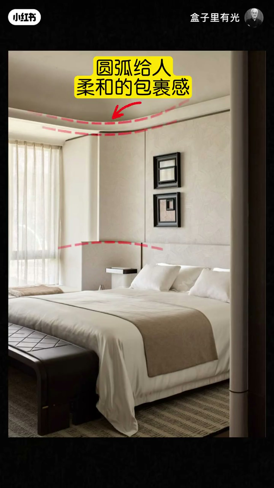
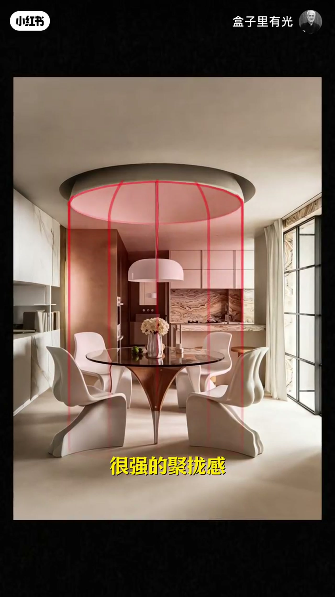

内容要点
盒子里有光用乐高模型把「直角墙」当场换成圆弧，再落到玄关、走廊、卧室、天花与餐厅实景：弧线带来包裹感与聚拢感，也能分区。片尾明确两条边界——小空间慎用扩张感强的圆弧，圆弧旁边不要留尖角，否则会放大不安全感。
知识结构
直角让人局促紧绷；改成圆弧有被包裹的安全感。优先用在玄关，一进门卸下防备。
走廊尽头用曲线让动线更顺滑；卧室圆弧提供柔和包裹感，有助于放松入眠。
平面天花难分区，圆弧兼具包裹与分区；餐厅圆弧有强聚拢感，强化团聚氛围。
圆弧有向外扩张力，小空间会显挤；附近勿留尖角，否则会放大尖角的不安全感。
用弧线软化家，本质是改「锐利几何」：墙角圆角、动线曲线、天花圆弧分区、餐厅圆弧聚拢。落地时先选场景，再守边界——小空间慎用扩张感，圆弧旁不要混生硬尖角。
00:00-00:20直角局促 → 圆弧安全感；先用在玄关
开场用方形房间模型立题：生硬呆板的直角让人「局促、紧绷」。约 00:04 红虚线钉住两侧直角墙缝，黄框写「感觉局促紧绷」。接着当场把直角换成圆弧板——00:07 字幕「那把直角改成圆弧」，口播给出情绪结果：被包裹的安全感，柔和、放松。
应用第一站是玄关：把锋利直角改成圆角，一打开家门就能卸下防备、感受被环抱的柔和。00:15 实景玄关里，弧形台座、圆形雕塑与曲线地拼把「进门第一眼」做成柔和仪式。


00:20-00:36走廊尽头走曲线；卧室圆弧助眠
走廊尽头若是直线硬转，动线观感僵硬；换成曲线，行走路线更顺滑流畅。画面给出尽端壁龛与灯带走廊作为场景锚点。
卧室段落强调心理效果：圆弧给人柔和包裹感，更有助于放松和入眠。00:32 截图用红线标出天花转角与床头隔断的圆弧，黄框「圆弧给人柔和的包裹感」——这是可直接对照自家卧室转角的检查清单。

00:36-00:54天花圆弧分区；餐厅圆弧聚拢
除了墙面，圆弧也可用在天花：平面天花「不能划分区域、感觉不踏实」；改成圆弧后既增加包裹感，又完成区域划分。00:40 画面用黄框点出平面天花的局限。
餐厅是聚拢感最强的场景：圆弧强化一家人就餐的团聚氛围。00:48 圆形天花凹槽被红圈圈出，四条红竖线落到圆桌周围，形成虚拟圆柱空间，字幕「很强的聚拢感」把几何与氛围绑在一起。

00:54-01:05避坑：小空间慎用；圆弧旁不要留尖角
作者提醒圆弧带有向外的扩张力：不要用在小空间，否则会显得拥挤。
第二条更具体——附近不要留生硬尖角。柔和圆弧与尖角并置时，会放大尖角给人的不安全感。片尾避坑画面用红圈钉住柜体直角，黄框「不要有尖角」，把「做了弧却没清尖角」标成常见翻车点。
完整转录（7段）
以下文本由 Whisper medium 模型自动转录，可能存在少量识别误差，已尽可能修正。
这是你家的方形房间 这些生硬呆板的直角让人感觉很局促 很紧绷 那把直角改成圆弧就有了一种被包裹的安全感
让你感觉很柔和 很放松 那这种圆弧都适合用在哪呢 首先可以用在玄关 把生硬锋利的直角改成圆角 让你一打开家门就能卸下防备
感受被环抱的柔和感 用在走廊的尽头 直线的转角路线很僵硬
换成曲线 行走时的路线就会更顺滑 更流畅 还可以用在卧室 圆弧能给人柔和的包裹感 更有助于我们的放松和入眠
那除了墙面 还可以用在天花上 平面的天花不能划分区域 感觉很不踏实 改成圆弧
增加了柔和的包裹感 还划分了区域 用在餐厅 圆弧还有很强的聚拢感 就能强化一家人就餐时的团聚氛围 圆弧有一种向外的扩张力
不要用在小空间 会显得很拥挤 附近不要有这种生硬的尖角 柔和的圆弧和生硬的尖角放在一起 会放大尖角给人的不安全感